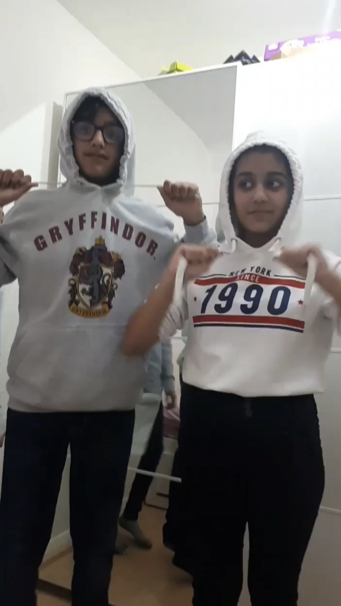

We properly met each other for the first time at Nikita aunty's baby shower. We were a boy and a girl around the same age, we became friends. This is the beginning of it all, the phase where we briefly knew each other. We were playful and fun, but within the group. We were just a young girl and boy who knew each other fairly well and of course there were some hehe giggly feelings in our mind for each other, but nothing serious. This era is not too significant, but worth a mention I believe. OOPS THERES SO MUCH EMPTY SPACE WOOPSY